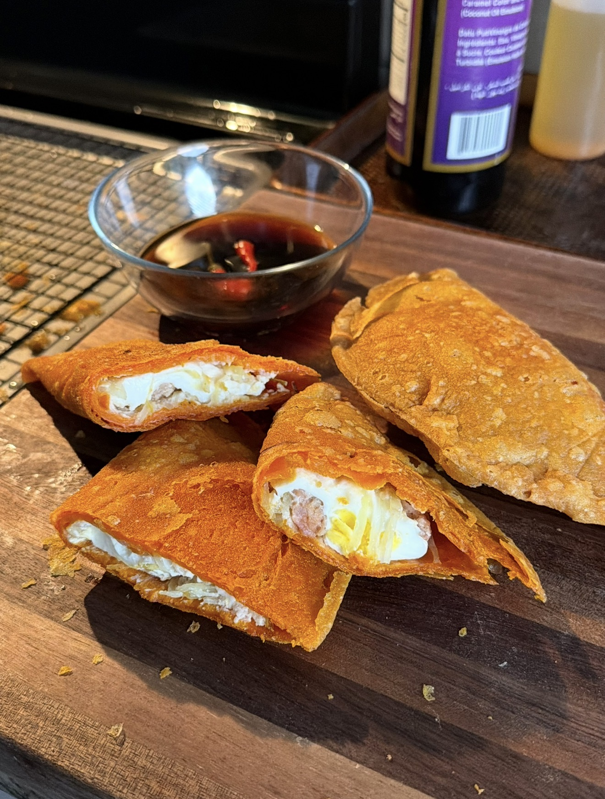
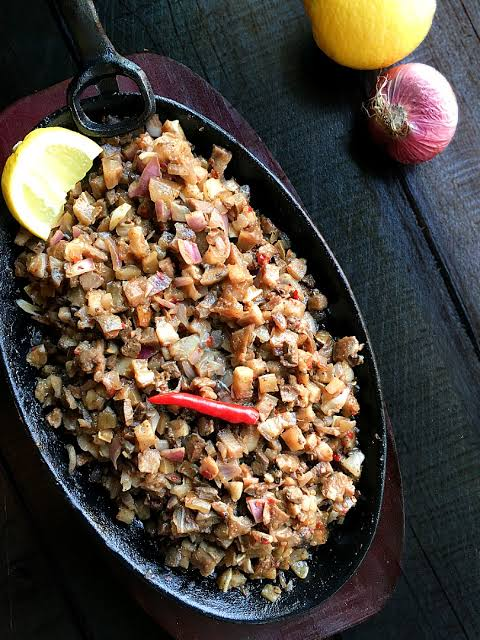
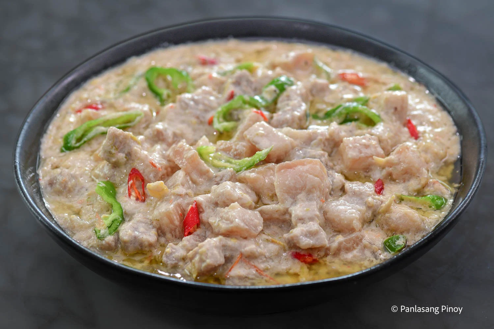
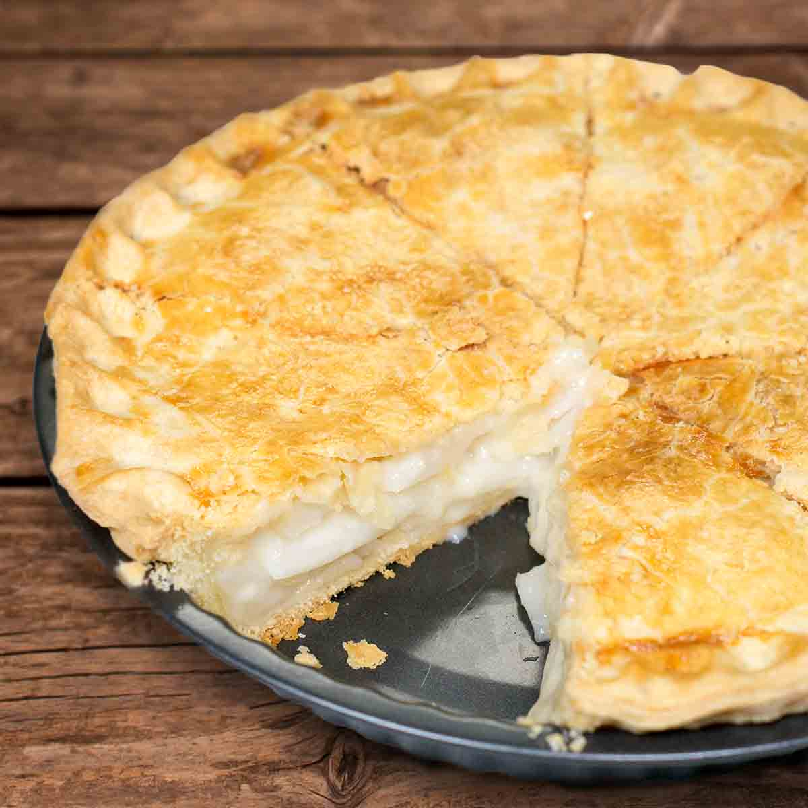
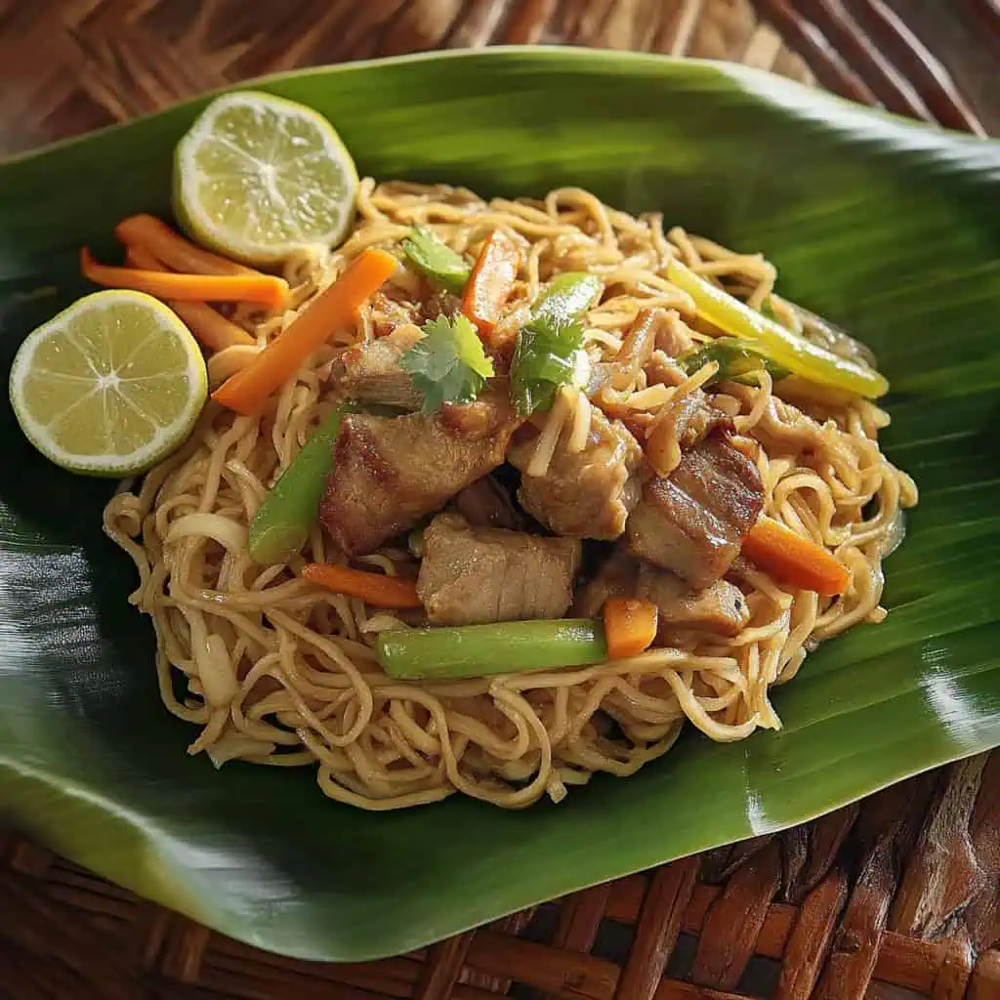
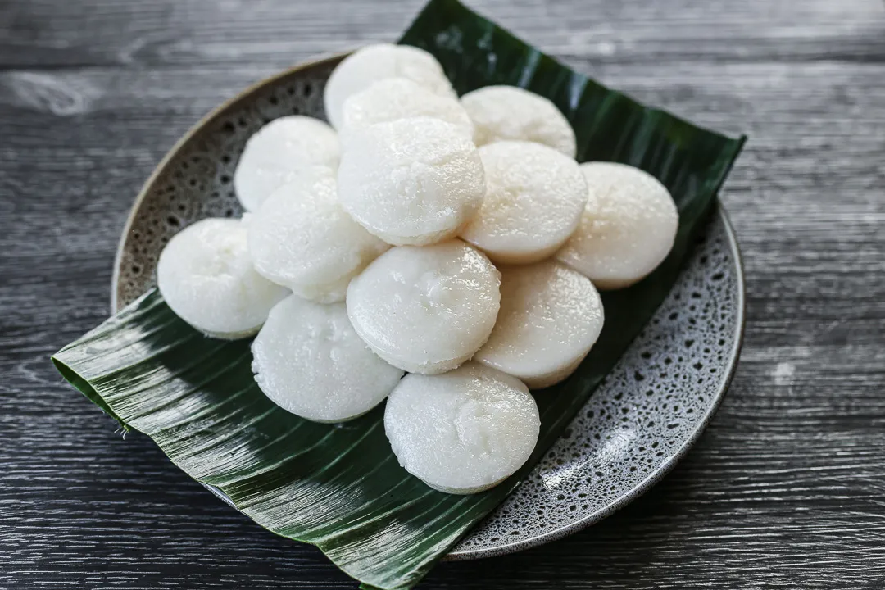
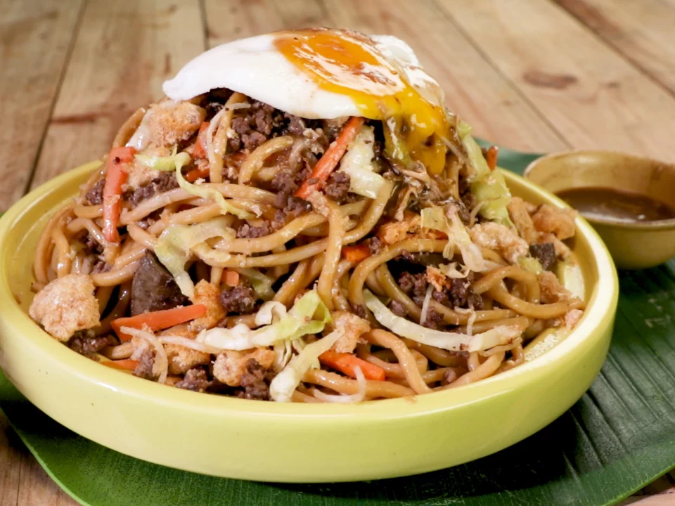

Discover the Best food of Luzon!
Welcome to our Food Tripping Guide! Luzon has many delicious dishes and snacks. Here are 10 delicacies you can try on your next trip.
Top 10 Luzon Delicacies
1. Ilocos Empanada

Place: Ilocos Norte and Ilocos Sur
A crispy, orange-colored snack with a filling of green papaya, egg, and longganisa. It is usually enjoyed with vinegar.
Food trip tip: Try it while walking around food stalls in Vigan or Batac.
2. Sisig

Place: Pampanga
A famous Kapampangan dish made with chopped pork, onions, calamansi, and chili. It is often served on a sizzling plate.
Food trip tip: Enjoy it hot with rice.
3. Bicol Express

Place: Bicol Region
A spicy dish with pork, coconut milk, and chilies. It is known for its rich, creamy, and spicy taste.
Food trip tip: Best eaten with warm rice, especially if you enjoy spicy food.
4. Bulalo

Place: Batangas
A warm beef soup made with beef shank, bone marrow, corn, and vegetables. It is popular during rainy or cool weather.
Food trip tip: A comforting meal to share with family or friends.
5. Buko Pie

Place: Laguna
A sweet pie filled with young coconut meat and creamy custard inside a flaky crust. It is a popular pasalubong.
Food trip tip: Buy a fresh slice or bring a whole pie home.
6. Pancit Habhab

Place: Lucban, Quezon
A noodle dish served on a banana leaf. Many locals enjoy eating it directly from the leaf without using utensils.
Food trip tip: Add a little vinegar for the traditional taste.
7. Puto Calasiao

Place: Calasiao, Pangasinan
Small, soft, and slightly chewy rice cakes. These sweet treats are commonly sold as snacks or pasalubong.
Food trip tip: Enjoy them with coffee or hot chocolate.
8. Pancit Batil Patung

Place: Tuguegarao, Cagayan
A filling noodle dish topped with meat, vegetables, and egg, usually served with a bowl of beaten-egg broth.
Food trip tip: A great choice for hungry travelers.
9. Laing

Place: Bicol Region
Dried taro leaves simmered slowly in coconut milk with chili and seasonings. It has a creamy and savory flavor.
Food trip tip: Try it as a side dish with rice.
10. Bagnet

Place: Ilocos Region
Large pieces of pork belly deep-fried until the skin is very crispy. It is commonly paired with vinegar or vegetables.
Food trip tip: Try it with a dipping sauce and steamed rice.
Food Trip Tips
Try the food while it is freshly prepared, ask locals for their recommendations, bring drinking water, and be mindful of spicy ingredients or food allergies.
About This Website
10 popular delicacies from different provinces in Luzon, Philippines. It aims to introduce visitors to the region's unique flavors, traditional dishes, and rich food culture. Explore Luzon through a delicious food-tripping experience!.